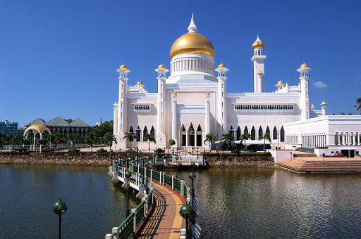
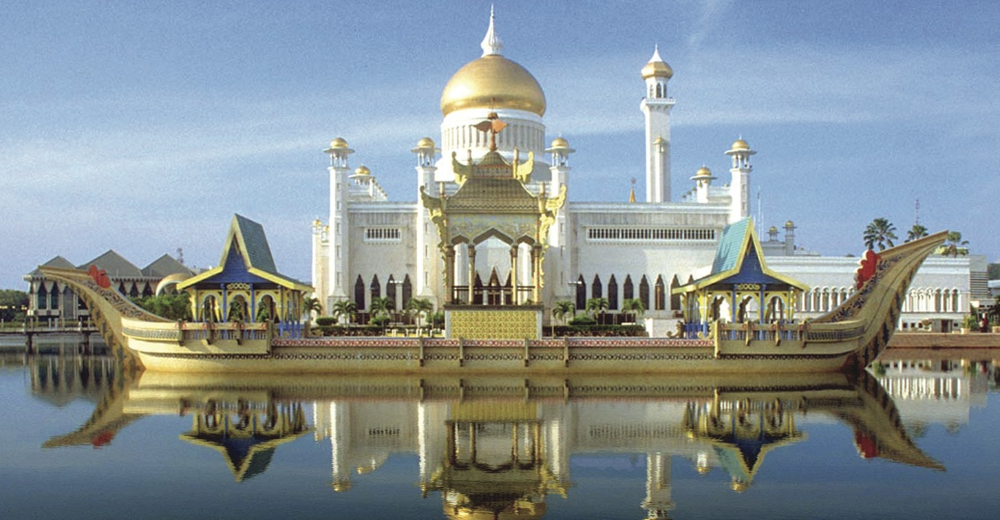

Народности
Культура Брунея
Свыше половины населения составляют малайцы (67%), до 15% - выходцы из Китая и других стран Юго-Восточной Азии и лишь 6% - коренные народности Калимантана - даяки (келаяны, ибане, меланау, дусуне, муруты).

Факты
Бруней – крошечное государство на острове Калимантан (Борнео), которое состоит из двух отдельных областей, граничащих с Малайзией и омываемых Южно-Китайским морем. Он славится своими пляжами и тропическими лесами с разнообразной флорой и фауной, большая часть из которых расположена на территории заповедников. Столица государства, Бандар-Сери-Бегаван, получила всемирную известность благодаря великолепной мечети Джаме-Аср-Хассанал-Болкиах с 29 золотыми куполами и огромному дворцу Истана-Нурул-Иман – резиденции правящего султана Брунея.
Климат
Экваториальный морской. Температура воздуха в течение всего года колеблется около отметки +26 С. Осадков выпадает от 2000 до 4000 мм в год, причем влажные и сухие сезоны не выделяются - дожди идут практически равномерно, но самым дождливым является период с сентября по январь.